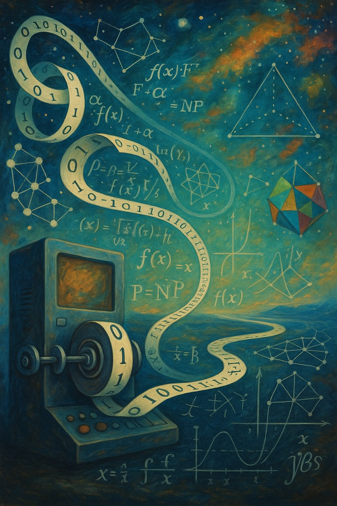

Chapter 2 introduces the power of randomness through core randomized algorithms and the complexity-theoretic framework for studying them.
Overview
Welcome to our reading group exploring Theoretical Computer Science (TCS). Everyone is invited: students and faculty from any department (and visitors from outside UIUC are welcome, too). TCS has deep ties to Math, ECE, Physics, and many other areas. If you would like to give a talk, please let the organizers know. If you are a student interested in helping lead and organize the group, please reach out to Fernando.
This semester, we will focus on one book: Pseudorandomness by Salil Vadhan.
Tentative Format
The format is flexible. For instance, our usual format can be more intense (and fun ;) ~2 hour gatherings depending on the speaker interests, and occasionally we can run a compressed ~1 hour talk. A suggestion for longer talks is the following.- First Part (~1 hour): general chapter presentation with context, motivation, and overview of technical results with some proofs.
- Break (~10 minutes): recharge and socialize.
- Second and Final Part (~40-60 minutes): present the technical part and proofs in more detail, followed by more questions and free speculations.
Tentative Schedule
A tentative schedule with speakers is given below. Please note that this is under construction.
Chapter 3 presents basic derandomization techniques, including methods that reduce randomness but are often specialized or computationally inefficient.
Chapter 4 studies expander graphs as sparse yet highly connected pseudorandom objects, covering expansion notions, random walks, and constructions.
Continuation of Chapter 4, with deeper discussion of expander properties, explicit constructions, and algorithmic applications.
Chapter 5 introduces list-decodable codes, their algorithmic decoding viewpoint, and their role as a unifying lens for several pseudorandom objects.
Continuation of Chapter 5, focusing on list-decoding ideas and connections to samplers, expanders, and extractors.
Chapter 6 develops randomness extractors: functions that turn weak, biased, and correlated randomness into nearly uniform bits.
Continuation of Chapter 6, including extractor constructions and their structural links to other pseudorandom primitives.
Chapter 7 introduces pseudorandom generators, formal definitions of computational indistinguishability, and key proof techniques such as hybrids.
Continuation of Chapter 7, with further constructions and complexity-theoretic implications of pseudorandom generators.
